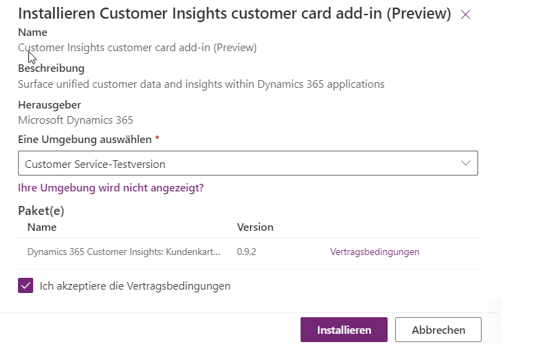

I- Eine App in der Mandantenansicht installieren
Um eine App in der Mandantenansicht im Microsoft Power Platform Admin Center zu installieren, folgen Sie diesen Schritten:- Melden Sie sich beim Microsoft Power Platform Admin Center an.
- Wählen Sie im linken Menü die Option Ressourcen > Dynamics 365-Apps aus.
- Wählen Sie eine App aus, die als Aktiviert angezeigt wird, und klicken Sie auf die Option Installieren.
- Wählen Sie eine Umgebung aus, prüfen Sie die zu installierenden Pakete, stimmen Sie den Vertragsbedingungen zu (ein Link zu den Bedingungen wird angezeigt), und klicken Sie auf Installieren.

In der Ansicht auf Umgebungsebene wird der Status Installieren ... angezeigt, während die App zur ausgewählten Umgebung hinzugefügt wird. Nach Abschluss des Vorgangs ändert sich der App-Status in Installiert.
II- Eine App aus der Umgebungsansicht installieren
Um eine App im Microsoft Power Platform Admin Center zu installieren, folgen Sie diesen Schritten:
1. Melden Sie sich beim Microsoft Power Platform Admin Center an.
2. Wählen Sie im linken Menü die Option Umgebungen und dann die gewünschte Umgebung aus.
3. Wählen Sie im Bereich Ressourcen im Fensterbereich auf der Ansichtsbildschirm Ihrer Umgebung (nicht im linken Navigationsbereich) die Option Dynamics 365-Apps aus.
4. Klicken Sie auf der Befehlsleiste auf App installieren.
5. Wählen Sie im Bereich Dynamics 365-Apps installieren rechts auf Ihrem Bildschirm eine App (Aktiviert) aus und klicken Sie dann auf Weiter
6. Stimmen Sie den Nutzungsbedingungen zu (Link zu den Bedingungen in der Aufforderung), und wählen Sie dann Installieren aus.